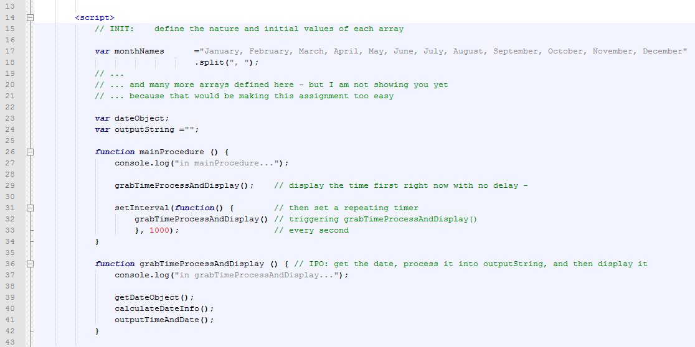

Timers: Intervals and timeouts
By now you have probably wanted to have some kind of delay in your program.
You have probably wanted it for an animation effect or something similar.
Most languages have some kind of command for that, like sleep(1000); or wait(1000);, or something similar.
But not Javascript. Because that would lock up the browser.
Javascript does this in a different way. Javascript's method is:
- More complicated
- More powerful
- and quite different from many other languages.
Using setTimeout() to set a delay
In Javascript, if you want something to happen, you put it into the function, and then set a Timeout() to call it after a certain amount of time.
For example:
<head>
<script>
function buttonTimer () { // PROCESS: trigger changeTheButtonText() after 3 seconds
setTimeout(function () { // set the timer
changeTheButtonText() // triggering changeTheButtonText()
}, 3000); // after three seconds
}
function changeTheButtonText() { // OUTPUT: output 'bang' into #buttonID
document.getElementById('buttonID').innerHTML = "Bang!"
}
</script>
</head>
<body>
<p>
<button id="buttonID" type="button" onclick="buttonTimer();">Click and wait three seconds</button>
</p>
</body>
Makes this:
The key to this is the command above in red: setTimeout(function(){changeTheButtonText();},3000);
In this specific case, setTimeout() is used to trigger the changeTheButtonText() function after 3000ms (3 seconds).
Note: keeping the brackets straight is tricky. Work very hard to make sure your parentheses and braces match!
Here is another example:
<head>
<!-- load jQuery for animation -->
<script src="https://ajax.googleapis.com/ajax/libs/jquery/2.1.3/jquery.min.js"></script>
<script>
function buttonTimer () { // PROCESS: trigger animateTheButton() after 1 second
setTimeout(function () { // set the timer
animateTheButton() // triggering animateTheButton()
}, 1000); // after 1 second
}
function animateTheButton() { // OUTPUT: animate the #buttonID by changing its size
$("#buttonID").animate({fontSize: "30px"});
$("#buttonID").animate({fontSize: "100px"});
$("#buttonID").animate({fontSize: "16px"});
}
</script>
</head>
<body>
<p>
<button id="buttonID" type="button" onclick="buttonTimer();">Click and wait a second</button>
</p>
</body>
Makes this:
Using setInterval() to periodically repeat a function
The setInterval() command works similarly, but it keeps repeating the function. For example:
<head>
<script>
var elapsedSeconds =0; // INIT: start with the number of seconds being zero
function buttonTimer () { // PROCESS: change the button text repeatedly each second
setInterval(function(){ // set the repeating timer
elapsedSeconds++; // that will add one to elapsedSeconds
changeTheButtonText(); // and trigger changeTheButtonText()
}, 1000); // every second
}
function changeTheButtonText() { // OUTPUT: display elapsedSeconds inside #buttonID
document.getElementById('buttonID').innerHTML = elapsedSeconds + " seconds since you clicked...";
}
</script>
</head>
<body>
<p>
<button id="buttonID" type="button" onclick="buttonTimer();">Click and wait a second</button>
</p>
</body>
Makes this:
Again, the key to this is the command above in red:
setInterval(function() {elapsedSeconds++; changeTheButton()}, 1000);
Notice that you can trigger more than one command repeatedly.
In this specific case, setInterval() is used to trigger both the elapsedSeconds++; and changeTheButton() commands after 1000ms (1 second).
Avoiding the delay on the first run
You are going to make a clock. It is going to tick away steadily, updating the time and date every second. But you probably want it to display the time right away.
The way to do this is to trigger the clock display once before calling setInterval(). For example:

Makes this:
The time is currently:
Notice that the code above calls grabTimeProcessAndDisplay() twice.
Once, right away so that the time shows up immediately.
And a second time inside setInterval() so that the time will refresh itself every second.
Saving your work
Download the template and rename it to your last name, such as "1.20H-BuildAClock-LastName.html".
The assignment
In this assignment you will add code to the template to create a program that displays (and updates each second) the current time and date in the following format:
"The time is currently: 9:08:14pm on Monday, March 30th, 2015", for example.
Please keep in mind the following:
- Start by initializing the arrays. I have provided some information for you to help. How will will you convert this into arrays?
- Remember to use intelligent variable names, such as: dayOfTheWeek.
- Remember to split your functions into separate parts: INIT, INPUT, PROCESS, and OUTPUT.
- In your descriptive comments for each function, indicate whether the function is for INIT, INPUT, PROCESS, or OUTPUT.
- Use
onload="mainProcedure();"to start the process rolling, not a button. - Use
setTimeout()orsetInterval()to update the time and date each second - Use arrays to convert the information from the
Date()functions into human-readable text - Is there another way to deal with am/pm?
- How do you avoid: 9:8:4pm?
Evaluation (out of 10)
- ___/2 — Well-modularized (chunked) code into separate init/input/processing/output functions
- ___/2 — Successful creation and use of arrays
- ___/2 — Successful use of time functions
- ___/1 — Successful use of timers
- ___/3 — Well-commented code with good indentation, commenting (including "INIT:", ...), and style